沖縄そば巡りの旅、今回は沖縄市胡屋にある「Barシーサー亭」さんにお邪魔してきましたよ🍜2025.6に食べました😄
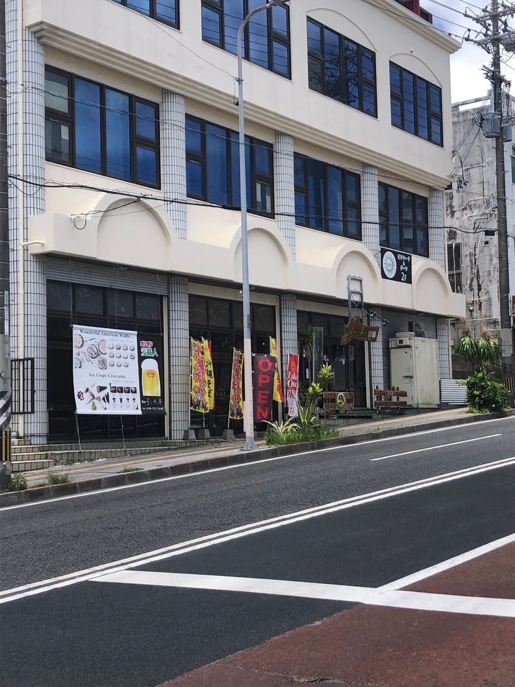
通りかかったときに「沖縄そば」の幟旗が立っているのが目に入って、思わず凸してきました。Barと沖縄そば、という組み合わせがなんとも気になりますよね😆
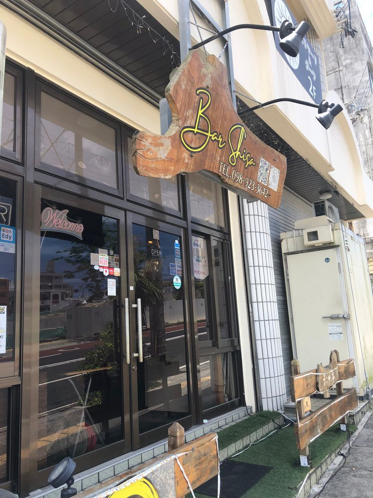
入口には木製の「Bar」の看板が下がっていて、見た目はやっぱり完全にBarですね。沖縄そば屋さんだと思って入る人は少なそうです（笑）
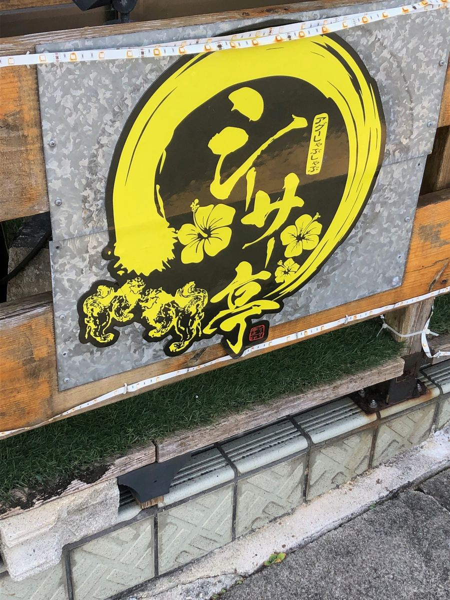
その横にはシーサーをあしらった、黄色い「シーサー亭」の立派な看板。これを見ると沖縄のお店だなという感じがして、ぐっと親しみがわきますね😊
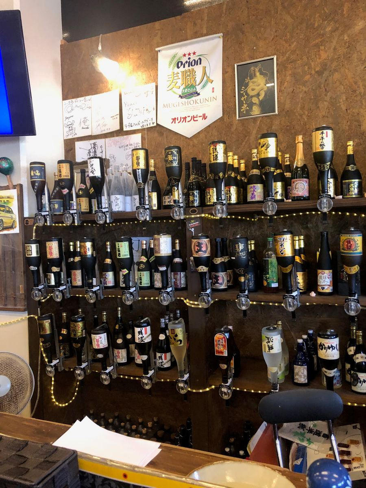
中に入ると、壁一面にお酒のボトルが並ぶ、まさしくBarの店内。正直なところ「ここでどんなそばが出てくるんだろう」と、少し身構えてしまいました^^;
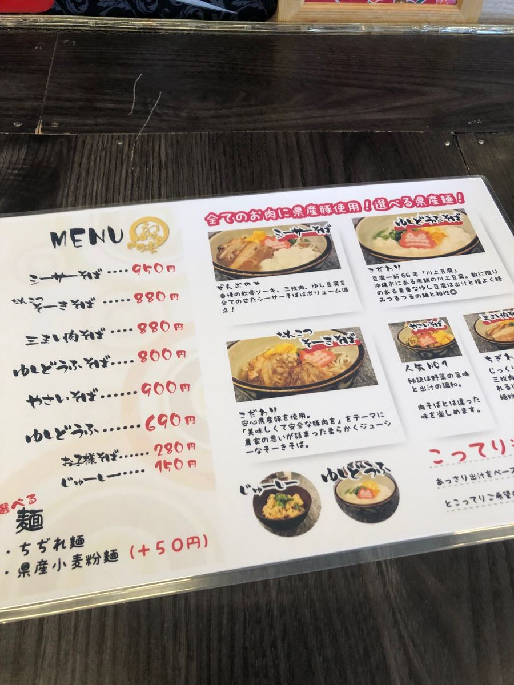
ところがメニューを見せてもらうと、これがなかなか本格的。しかも麺が「ちぢれ麺」と「県産小麦粉麺（＋50円）」から選べるんですよね🤤
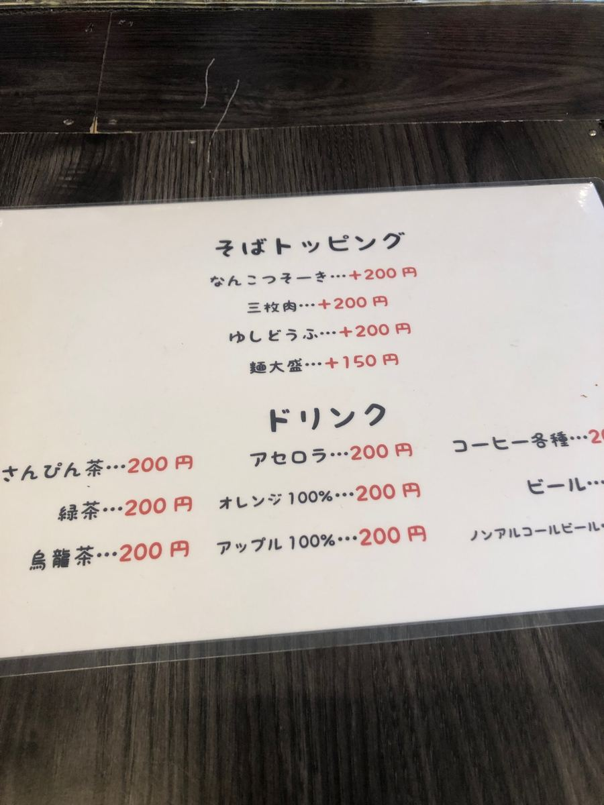
トッピングも、なんこつソーキ・三枚肉・ゆしどうふが各＋200円、麺大盛が＋150円と充実しています。
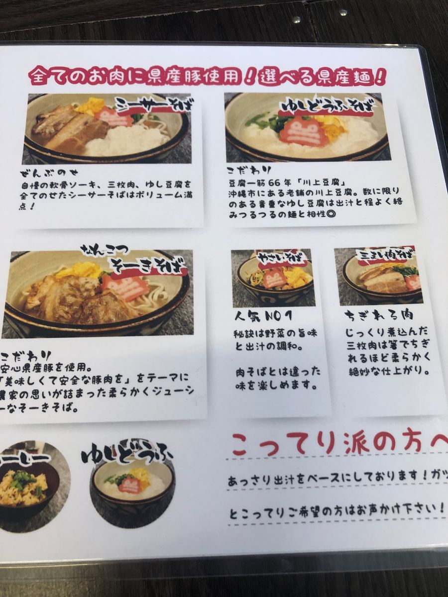
さらに「全てのお肉は県産豚使用！選べる県産麺！」の文字が。スープもあっさり出汁をベースにしていて、こってりがお好みの方は声をかけてください、とのこと。Barのお店とは思えない、しっかりしたこだわりですね✨
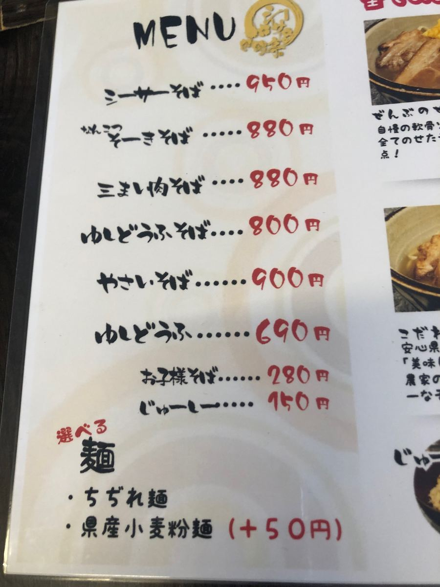
シーサーそば950円、なんこつそーきそば880円、三まい肉そば880円、ゆしどうふそば800円、やさいそば900円。迷いましたが、ここはやっぱり店名を冠した「シーサーそば」をいただくことにしました。
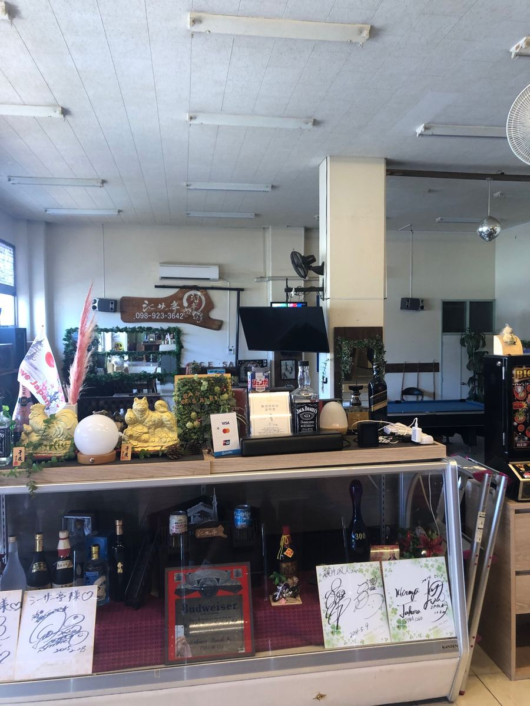
注文を済ませて店内を見回すと、Barで飲みながら遊べるようにビリヤード台まで置かれています😄
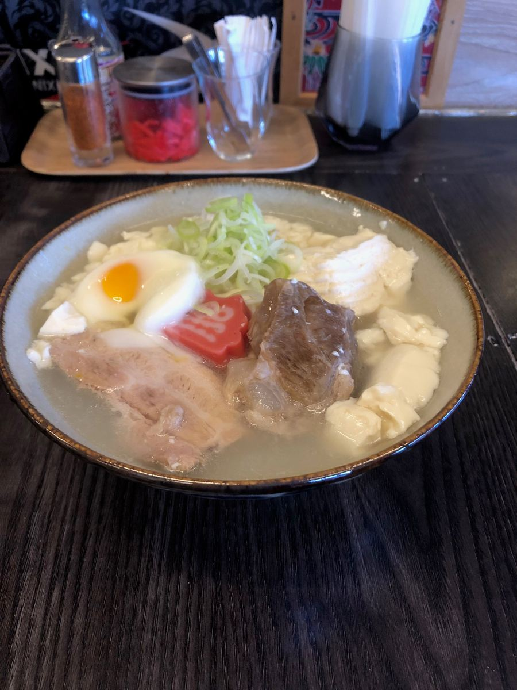
そして運ばれてきたのがこちら。ゆし豆腐に三枚肉、軟骨ソーキ、さらに半熟の目玉焼きまで乗った全部乗せ。Barのお店が作る沖縄そばとは思えない、思いのほか本格的な一杯です✨
まずはスープから。豚骨出汁のあっさり系の味わいで、すっと入ってくる優しい一杯ですね😋
具材のなかでも印象的だったのがゆし豆腐。沖縄市の老舗「川上豆腐」さんのものだそうで、滑らかな口当たりがたまりません😊 三枚肉と軟骨ソーキはどちらも柔らかく、味付けはこちらもあっさり系。ただ、少し筋感は感じられましたね^^;
そして他のお店ではなかなか見かけないのが、半熟の目玉焼き。これは嬉しい一品ですね。
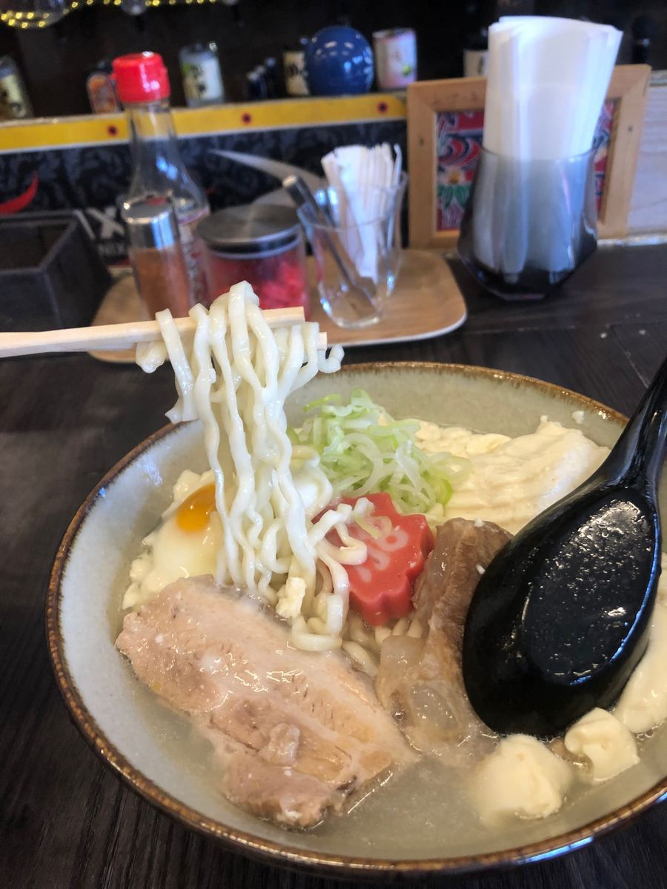
麺は中太の縮れ麺で、茹で加減は柔らかめ。あっさりしたスープによく合っていました🍜
評価（9点/15点）：豚骨出汁のあっさり系スープに、柔らかめの中太縮れ麺。川上豆腐の滑らかなゆし豆腐、柔らかな三枚肉と軟骨ソーキ、さらに半熟の目玉焼きまで乗った全部乗せです。Barのお店とは思えない、普通に美味しい一杯でしたね😊
麺 ：★★★☆☆（3）
スープ：★★★☆☆（3）
具 ：★★★☆☆（3）